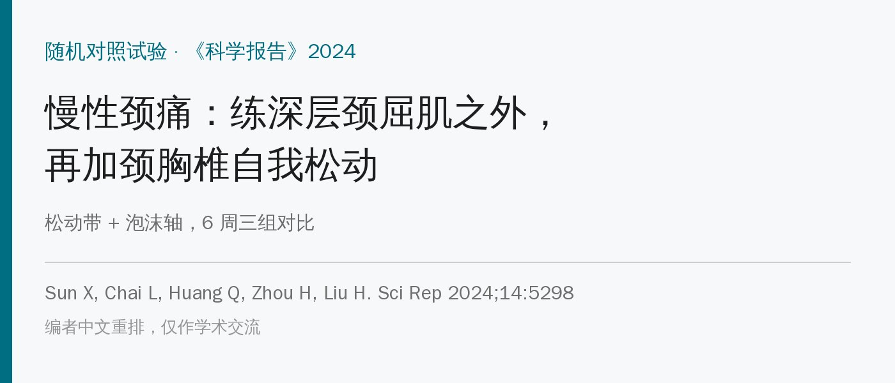
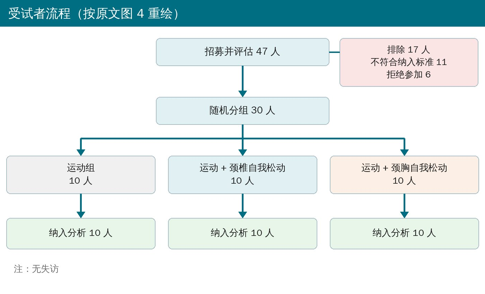
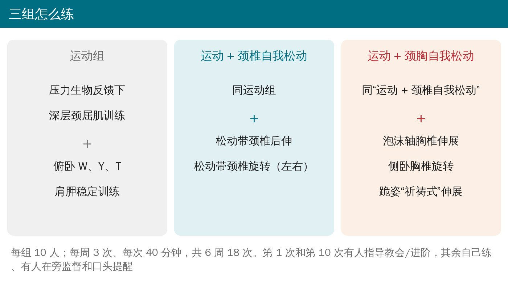
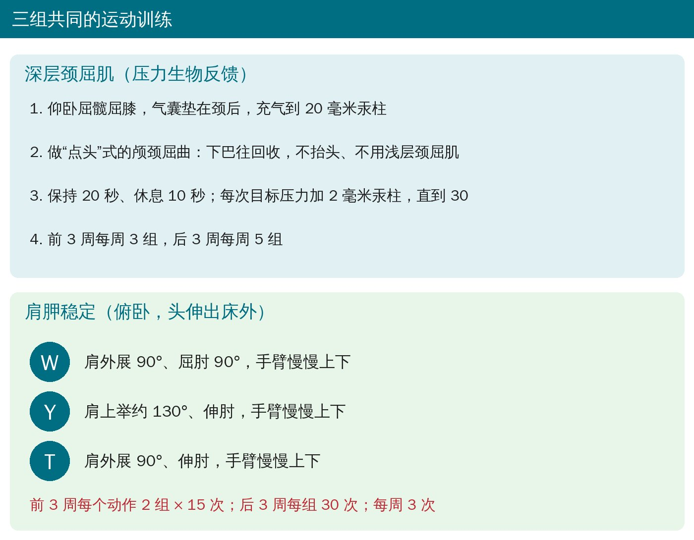
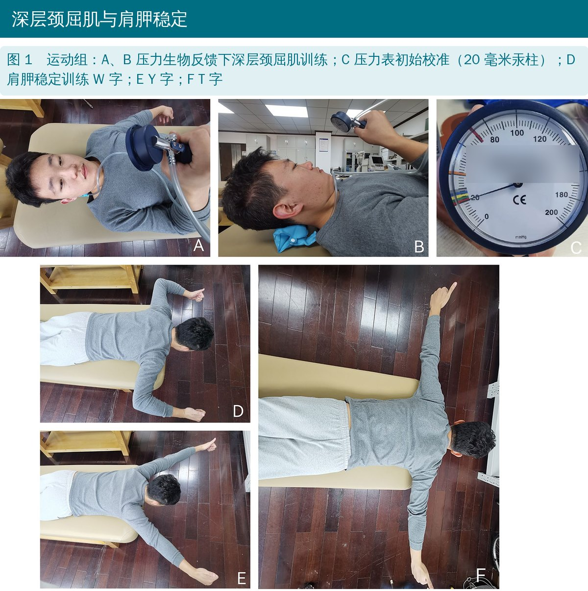
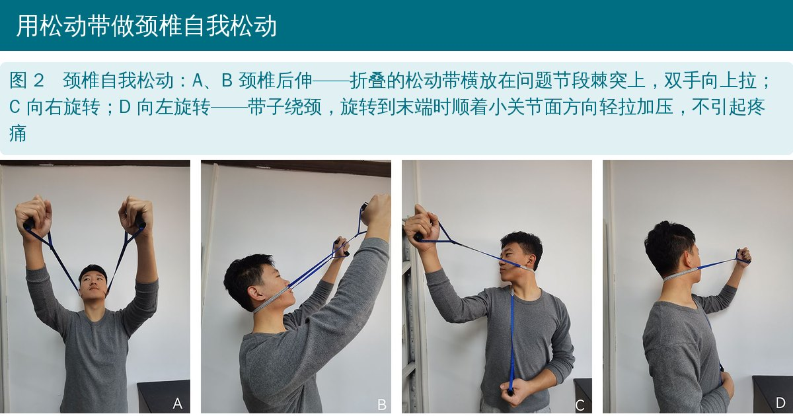
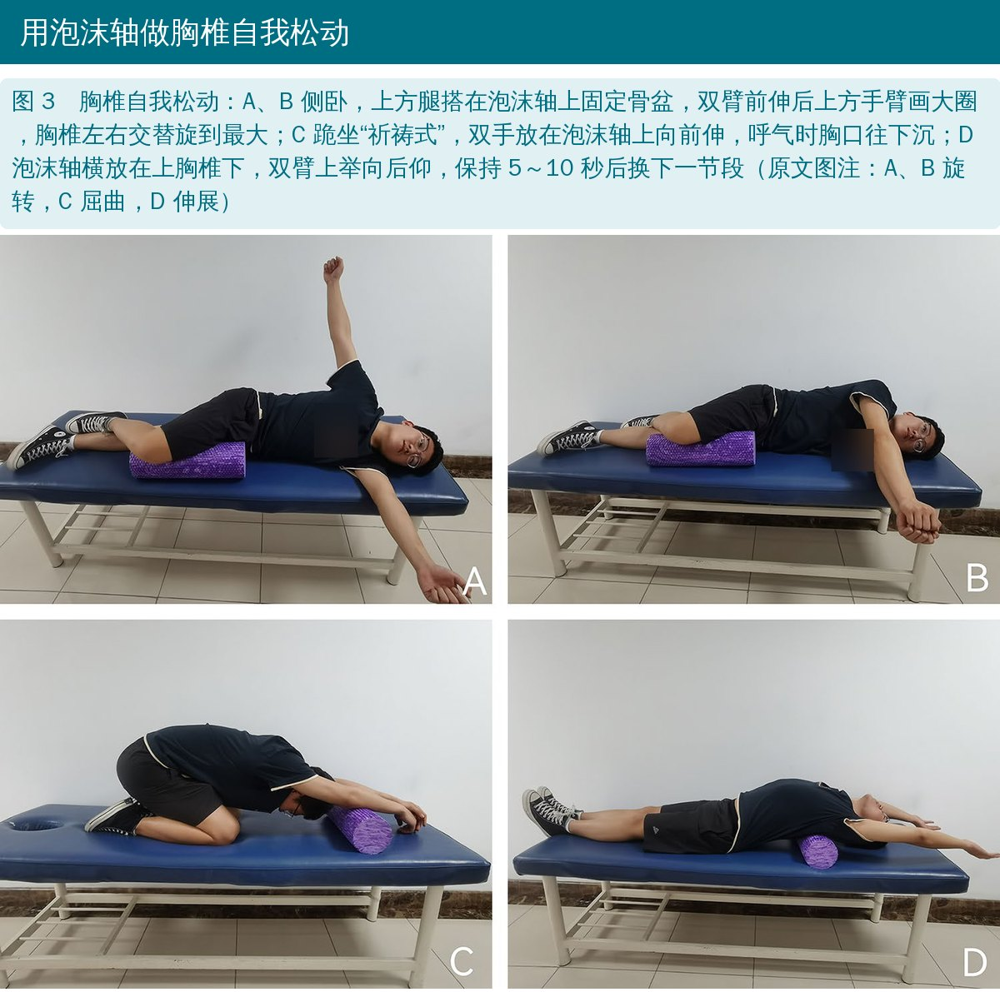
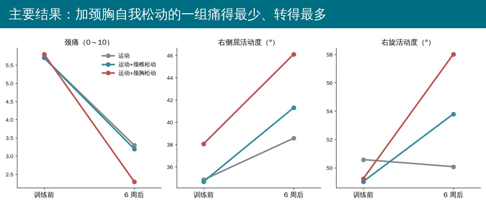

🔖原文信息（编者中文重排）
📚 文献信息
▪ Sun X, Chai L, Huang Q, Zhou H, Liu H. Effects of exercise combined with cervicothoracic spine self-mobilization on chronic non-specific neck pain. Sci Rep. 2024;14:5298.
▪ 作者来自首都体育学院、滇西应用技术大学、北京大学第三医院骨科
▪ 单盲随机对照试验，中国临床试验注册号 ChiCTR2300073801
慢性非特异性颈痛越来越年轻化，和长时间低头看手机、久坐有关。颈痛的人深层颈屈肌（颈长肌、头长肌）激活延迟，所以压力生物反馈下练深层颈屈肌，是常用的运动方案。
另一方面，颈椎的活动里本来就包含上胸椎的活动，上胸椎僵硬时颈椎要代偿。这项研究想看：在练深层颈屈肌和肩胛稳定的基础上，病人自己用松动带和泡沫轴做颈椎、胸椎的自我松动，能不能多一些好处。
• 对象：颈后部疼痛 ≥3 个月、疼痛评分 ≥3、近 1 个月没接受过治疗；排除颈椎外伤手术、严重神经根型或脊髓型颈椎病、骨质疏松、肿瘤、心肺疾病
• 招募 47 人，最终 30 人随机分 3 组，每组 10 人，无失访
• 三组都是每周 3 次、每次 40 分钟，共 6 周 18 次；第 1 次教会、第 10 次进阶，其余自己练、旁边有人监督
• 测量：疼痛（0～10）、颈椎 6 个方向活动度、颈部功能障碍指数、深层颈屈肌耐力（压力生物反馈）和力量（手持测力计）、生活质量（SF-36 生理和心理总分）

🔖受试者流程

🔖三组方案

🔖深层颈屈肌与肩胛稳定
• 深层颈屈肌：仰卧屈髋屈膝，气囊垫在颈后充到 20 毫米汞柱，做“点头”式的颅颈屈曲；保持 20 秒、休息 10 秒，每次目标压力加 2，直到 30 毫米汞柱
• 肩胛稳定：俯卧、头伸出床外，手臂摆成 W、Y、T 慢慢上下；前 3 周每个动作 2 组 × 15 次，后 3 周每组 30 次

🔖原文图 1
• 后伸：把折叠的松动带横放在有问题节段的棘突上，双手抓住两端向上拉，带着该节段沿后伸方向滑动
• 旋转（以右旋为例）：带子放在问题节段棘突上，双手抓两端；左肘顶住椅背防止上背跟着转；向右转头时右手拉带子，方向顺着颈椎小关节面；转到末端时轻度加压，不引起疼痛

🔖原文图 2
• 胸椎伸展：仰卧，泡沫轴横放在上胸椎下面，双臂上举、身体后仰、头朝地面方向；保持 5～10 秒，再把泡沫轴移到下一个节段
• 胸椎旋转：侧卧屈髋屈膝 90°，上方腿搭在泡沫轴上、下方腿贴床，稳住骨盆和腰；双臂前伸，上方手画最大的圈，胸椎左右交替旋到最大
• 祈祷式伸展：跪坐，臀部坐在脚跟上，双手伸直放在泡沫轴上，一边慢慢呼气一边让胸口往地面沉

🔖原文图 3

🔖主要结果
• 三组 6 周后疼痛都下降、深层颈屈肌力量和耐力都提高、功能障碍都减轻
• 活动度：两个自我松动组的后伸、侧屈、旋转改善比运动组好；运动组的左右侧屈、左右旋转其实没有显著变化（右旋还从 50.6° 降到 50.1°）
• 颈胸自我松动组：治疗后疼痛最低（2.3 vs 3.3、3.2），右侧屈最大（46.1° vs 38.6°、41.3°）
• 深层颈屈肌力量和耐力三组提高幅度一样，加不加松动没影响
• 生活质量生理总分，颈胸松动组比运动组高
• 每组只有 10 人，样本量是按 5 人一组的预试验算出来的（效应量 η² = 0.67，非常大），容易高估
• 疼痛的组间差别没那么稳：时间 × 组别交互作用不显著（P = 0.388），所谓“颈胸组止痛最好”只是治疗后数值的比较
• 颈胸组多做了一整套胸椎练习，训练量和时间更多，好处可能部分来自“练得更多”
• 同一位评估者测所有结局，原文没说评估者是否知道分组
• 只看了 6 周结束时，没有随访
原文里对不上的地方：
• 深层颈屈肌耐力测试最高只测到 30 毫米汞柱（训练也只练到 30），但治疗后三组平均值是 35～36 毫米汞柱，超过了测试上限
• 生活质量“交互作用不显著（F = 3.648，P = 0.040）”——P = 0.040 其实是显著的
• 疼痛：正文写颈胸组 vs 颈椎组 d = 1.34，表 2 和摘要写 1.23
• 颈部功能障碍指数：正文说颈胸组改善“好于”运动组，但 P = 0.122 并不显著
• 表 1 力量 t 值：颈椎组印成 2.343（和功能障碍指数同一个数，且符号相反）；颈胸组 t = −16.884 却只有 P = 0.007，运动组 t = −5.681 只有 P = 0.008，t 值和 P 值对不上
• 表 2 多处置信区间有误：右侧屈、左旋的区间少了负号（“11.08 to −3.99”）；后伸 −0.48 的区间是“−4.38 to 5.34”；生理总分 −0.05（−0.13 至 −0.02）不含 0，P 却是 0.361
• 功能障碍指数和生活质量的数值（如 0.53、−0.34）用的换算方式不常见，没法和常用的 0～50 分、0～100 分对照
• 效应量分级用了非常规标准（d ≥ 0.7 就是“非常大”）；招募需 27 人，写“最终招募 47 人”实际纳入 30 人
• 慢性颈痛的底子：压力生物反馈下练深层颈屈肌 + 俯卧 W、Y、T，能提高颈屈肌力量耐力、减痛
• 如果颈椎侧屈、旋转受限，加一套自我松动：松动带做颈椎后伸和旋转，泡沫轴做胸椎伸展、旋转和祈祷式伸展
• 自我松动只要一根带子、一个泡沫轴，教会后病人可以在家做；注意末端加压不引起疼痛
• 做颈椎旋转松动时，用对侧手肘顶住椅背，防止上背代偿
• 这是 30 人、6 周的小样本研究，结果偏乐观，适合作为“可以试”的选项
原文表 1 三组训练前后结果（均值 ± 标准差）
| 指标 | 组别 | 训练前 | 训练后 | t | P |
|---|---|---|---|---|---|
| 疼痛（0～10） | 运动 | 5.70 ± 2.06 | 3.30 ± 0.67 | 4.811 | < 0.001 |
| 颈椎松动 | 5.70 ± 1.70 | 3.20 ± 0.63 | 5.622 | < 0.001 | |
| 颈胸松动 | 5.80 ± 1.40 | 2.30 ± 0.82 | 8.720 | < 0.001 | |
| 前屈活动度（°） | 运动 | 26.52 ± 6.90 | 37.20 ± 6.22 | −4.930 | 0.001 |
| 颈椎松动 | 26.76 ± 6.72 | 37.40 ± 5.68 | −4.598 | 0.001 | |
| 颈胸松动 | 28.70 ± 7.04 | 40.34 ± 3.30 | −7.684 | 0.000 | |
| 后伸活动度（°） | 运动 | 39.56 ± 7.50 | 44.02 ± 6.89 | −2.869 | 0.018 |
| 颈椎松动 | 42.40 ± 5.80 | 52.07 ± 3.64 | −4.583 | 0.001 | |
| 颈胸松动 | 42.40 ± 5.79 | 51.59 ± 4.87 | −4.364 | 0.002 | |
| 左侧屈活动度（°） | 运动 | 36.27 ± 8.14 | 41.33 ± 4.67 | −1.792 | 0.107 |
| 颈椎松动 | 34.37 ± 6.42 | 43.51 ± 3.53 | −4.166 | 0.002 | |
| 颈胸松动 | 37.92 ± 5.45 | 45.76 ± 2.47 | −4.152 | 0.002 | |
| 右侧屈活动度（°） | 运动 | 34.84 ± 8.29 | 38.57 ± 4.46 | −1.839 | 0.099 |
| 颈椎松动 | 34.68 ± 7.75 | 41.31 ± 3.39 | −3.517 | 0.007 | |
| 颈胸松动 | 38.07 ± 6.11 | 46.11 ± 4.89 | −4.652 | 0.001 | |
| 左旋活动度（°） | 运动 | 46.32 ± 8.82 | 47.25 ± 6.31 | −0.362 | 0.726 |
| 颈椎松动 | 42.63 ± 7.67 | 49.41 ± 4.34 | −4.019 | 0.003 | |
| 颈胸松动 | 42.75 ± 7.57 | 54.72 ± 5.61 | −4.628 | 0.001 | |
| 右旋活动度（°） | 运动 | 50.58 ± 4.40 | 50.08 ± 2.51 | 0.371 | 0.719 |
| 颈椎松动 | 49.03 ± 6.42 | 53.80 ± 3.80 | −3.387 | 0.008 | |
| 颈胸松动 | 49.23 ± 6.75 | 58.02 ± 6.27 | −3.479 | 0.007 | |
| 深层颈屈肌耐力（毫米汞柱） | 运动 | 24.20 ± 2.74 | 35.40 ± 4.22 | −8.806 | < 0.001 |
| 颈椎松动 | 24.60 ± 2.67 | 35.20 ± 3.79 | −9.165 | < 0.001 | |
| 颈胸松动 | 23.20 ± 1.40 | 36.20 ± 8.72 | −4.867 | < 0.001 | |
| 深层颈屈肌力量（牛） | 运动 | 54.70 ± 10.51 | 73.50 ± 16.84 | −5.681 | 0.008 |
| 颈椎松动 | 54.20 ± 12.88 | 73.30 ± 19.62 | 2.343 | 0.019 | |
| 颈胸松动 | 56.30 ± 17.23 | 78.50 ± 15.63 | −16.884 | 0.007 | |
| 颈部功能障碍指数 | 运动 | 0.53 ± 0.14 | 0.42 ± 0.07 | 2.127 | 0.048 |
| 颈椎松动 | 0.44 ± 0.08 | 0.39 ± 0.05 | 2.343 | 0.044 | |
| 颈胸松动 | 0.45 ± 0.10 | 0.36 ± 0.07 | 2.234 | 0.038 | |
| 生活质量·生理总分 | 运动 | 0.11 ± 0.10 | 0.17 ± 0.10 | −1.287 | 0.115 |
| 颈椎松动 | 0.12 ± 0.08 | 0.23 ± 0.07 | −3.100 | 0.006 | |
| 颈胸松动 | 0.11 ± 0.08 | 0.26 ± 0.06 | −4.782 | < 0.001 | |
| 生活质量·心理总分 | 运动 | −0.34 ± 0.03 | −0.31 ± 0.04 | −1.842 | 0.099 |
| 颈椎松动 | −0.31 ± 0.04 | −0.20 ± 0.16 | −3.187 | 0.011 | |
| 颈胸松动 | −0.31 ± 0.06 | −0.19 ± 0.16 | −3.609 | 0.006 |
原文表 2 训练后组间比较
| 指标 | 比较 | 均值差（95% 置信区间） | P | d |
|---|---|---|---|---|
| 疼痛 | 运动 vs 颈椎松动 | 0.00（−0.83～0.83） | 1.000 | 0.15 |
| 运动 vs 颈胸松动 | 1.00（0.17～1.83） | 0.014 | 1.34 | |
| 颈椎松动 vs 颈胸松动 | 1.00（0.17～1.83） | 0.014 | 1.23 | |
| 前屈 | 运动 vs 颈椎松动 | −0.20（−6.32～5.92） | 1.000 | 0.03 |
| 运动 vs 颈胸松动 | −3.14（−9.26～2.98） | 0.605 | 0.63 | |
| 颈椎松动 vs 颈胸松动 | −2.94（−9.06～3.18） | 0.693 | 0.63 | |
| 后伸 | 运动 vs 颈椎松动 | −8.05（−12.91～−3.18） | 0.006 | 1.46 |
| 运动 vs 颈胸松动 | −7.56（−12.43～−2.70） | 0.011 | 1.27 | |
| 颈椎松动 vs 颈胸松动 | −0.48（−4.38～5.34） | 1.000 | 0.11 | |
| 左侧屈 | 运动 vs 颈椎松动 | −2.18（−6.36～2.01） | 0.588 | 0.53 |
| 运动 vs 颈胸松动 | −4.42（−8.79～−1.06） | 0.036 | 1.19 | |
| 颈椎松动 vs 颈胸松动 | −2.25（−5.61～1.12） | 0.546 | 0.74 | |
| 右侧屈 | 运动 vs 颈椎松动 | −2.73（−6.29～0.81） | 0.375 | 0.69 |
| 运动 vs 颈胸松动 | −7.53（11.08～−3.99） | 0.001 | 1.61 | |
| 颈椎松动 vs 颈胸松动 | −4.80（−8.34～−1.25） | 0.030 | 1.14 | |
| 左旋 | 运动 vs 颈椎松动 | −2.16（−7.18～2.87） | 1.000 | 0.40 |
| 运动 vs 颈胸松动 | −7.47（12.50～−2.44） | 0.015 | 1.25 | |
| 颈椎松动 vs 颈胸松动 | −5.31（−10.34～−0.28） | 0.118 | 1.06 | |
| 右旋 | 运动 vs 颈椎松动 | −3.71（−7.81～0.40） | 0.224 | 1.16 |
| 运动 vs 颈胸松动 | −7.94（−12.04～−3.83） | 0.001 | 1.66 | |
| 颈椎松动 vs 颈胸松动 | −4.23（−8.33～−0.13） | 0.131 | 0.81 | |
| 颈屈肌耐力 | 运动 vs 颈椎松动 | 0.20（−5.31～5.71） | 1.000 | 0.05 |
| 运动 vs 颈胸松动 | −0.80（−6.31～4.71） | 1.000 | 0.12 | |
| 颈椎松动 vs 颈胸松动 | −1.00（−6.51～4.51） | 1.000 | 0.15 | |
| 颈屈肌力量 | 运动 vs 颈椎松动 | 0.20（−15.81～16.21） | 1.000 | 0.01 |
| 运动 vs 颈胸松动 | −5.0（−21.01～11.01） | 1.000 | 0.31 | |
| 颈椎松动 vs 颈胸松动 | −5.20（−21.21～10.81） | 1.000 | 0.29 | |
| 功能障碍指数 | 运动 vs 颈椎松动 | 0.03（−0.03～0.09） | 0.922 | 0.49 |
| 运动 vs 颈胸松动 | 0.06（0.00～0.12） | 0.122 | 0.86 | |
| 颈椎松动 vs 颈胸松动 | 0.03（−0.02～0.09） | 0.831 | 0.49 | |
| 生理总分 | 运动 vs 颈椎松动 | −0.05（−0.13～−0.02） | 0.361 | 0.70 |
| 运动 vs 颈胸松动 | −0.09（−0.16～−0.02） | 0.037 | 1.09 | |
| 颈椎松动 vs 颈胸松动 | −0.04（−0.11～−0.03） | 0.870 | 0.46 | |
| 心理总分 | 运动 vs 颈椎松动 | −0.11（−0.23～0.01） | 0.236 | 0.94 |
| 运动 vs 颈胸松动 | −0.11（−0.24～0.01） | 0.207 | 1.03 | |
| 颈椎松动 vs 颈胸松动 | −0.00（−0.13～0.12） | 1.000 | 0.06 |
置信区间按原文照录（部分区间缺负号或与均值差不一致，见正文）。
欢迎关注悦美力公众号，获取更多物理治疗的专业知识！
📄参考文献：
Sun X, Chai L, Huang Q, Zhou H, Liu H. Effects of exercise combined with cervicothoracic spine self-mobilization on chronic non-specific neck pain. Sci Rep. 2024;14:5298. doi:10.1038/s41598-024-55181-8
原文以知识共享署名 4.0 协议（CC BY 4.0）发表。本文为中文解读，照片引自原文图 1～3（编者加中文标注，压力表品牌与衣服标志已模糊），流程图按原文图 4 重绘为中文，方案卡、训练卡与结果图为编者中文绘制，表格为编者翻译。